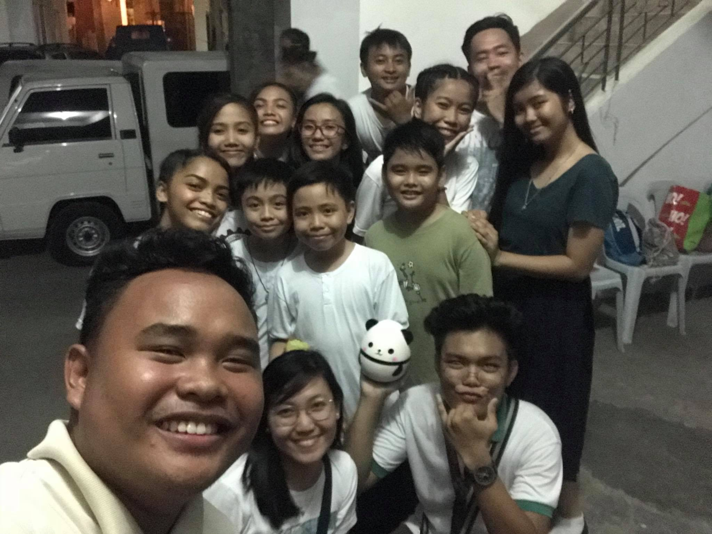
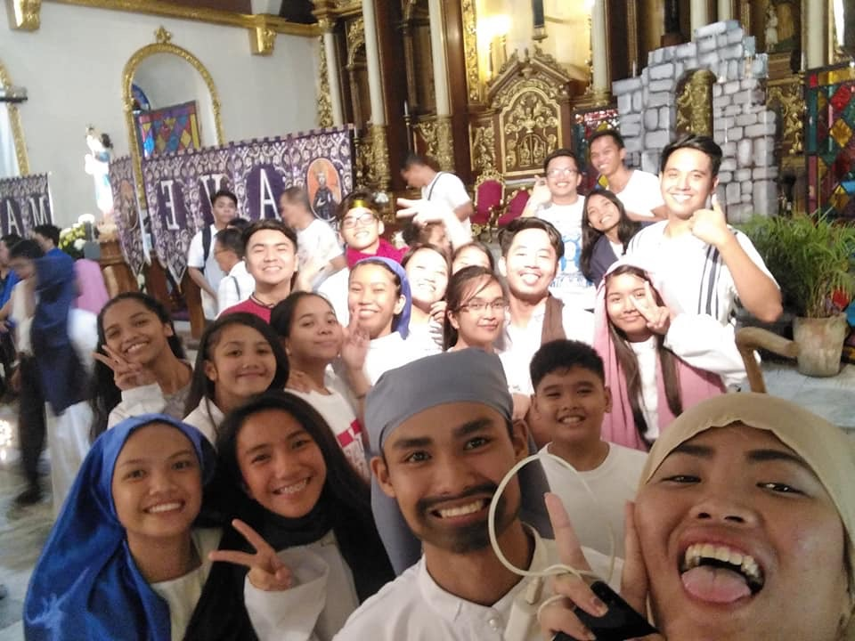
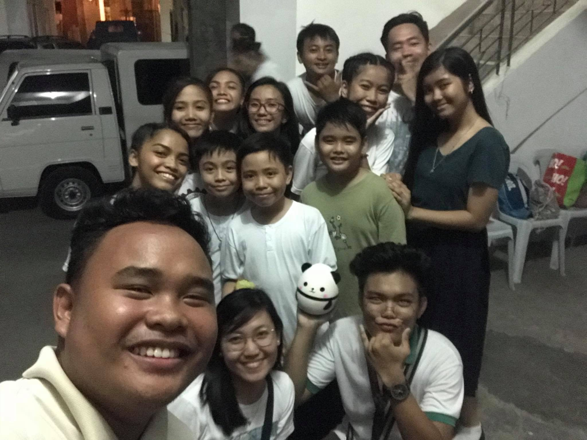
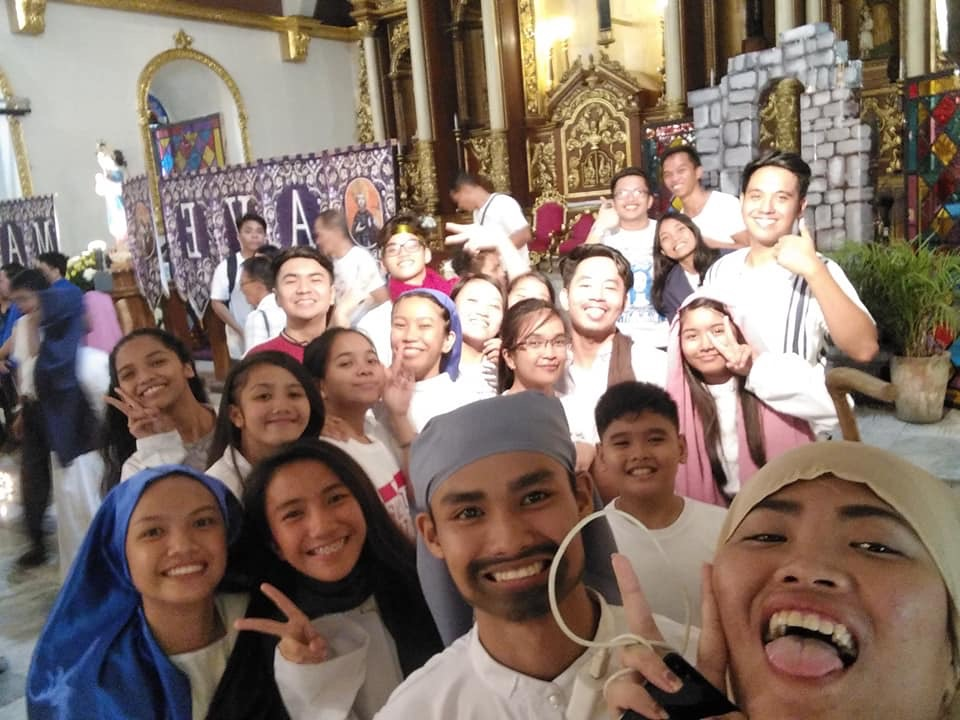

Rosary Rally
A Parish Culminating Activity of the Rosary Month last October 27, 2018 at 3 o'clock in the afternoon at Saint William the Hermit Cathedral. The activity was highlighted with an offering to the Blessed Mother. Instead of flowers, Noche Buena food items was offered. The following offerings was given to indigent families this December.
2nd Diocesan Youth Marian Congress
The 2nd Diocesan Youth Marian Congress was held at St. Catherine of Alexandria Parish which is also called the Shrine of Our Lady of Namacpacan at Luna, La Union last October 20, 2018. May our Blessed Mother continue to guide and enlighten us, that we, too, may learn to accept the mysterious designs of God's will. The theme of the event is "Do not be afraid, Mary, for you have found favor with God." (Lk 1:30). In the photo is the church where it was held.
Zonal Taize
"Taste and see how good the Lord is; blessed the man who takes refuge in him." (Psalm 34:9). The Parish Youth Ministry of Saint William the Hermit and The Feast Video San Fernando City conducted a taize prayer last August 10. With special thanks to our City Mayor, Hon. Hermenegildo A. Gualberto ("Manong Dong"), for his presence during the event!
Visit of the Pilgrim Image of the Black Nazarene
The Diocese of San Fernando de La Union is the
second in Ilocandia to be visited by the image of
the Black Nazarene. It came at La Union last November
26, 2018 and departed this December 2, 2018 only.
Devotees from different parishes of the Diocese of
San Fernando de La Union gathered for the welcoming
procession for the Pilgrim Image of the Black Nazarene
along the San Fernando National Highway, followed by a
Eucharistic Celebration presided over by Rev. Fr. Roberto
Benito Collado and the one who gave us a meaningful homily is Rev.
Fr. Douglas Badong held at Saint William the Hermit
Cathedral Parish, November 26. In the first day of the
Black Nazarene in our diocese, we continue to pray for the
needs of our brothers and sisters, that we may have generous
hearts to help them in their needs.
Viva Nuestro Padre Jesus Nazareno! #NPJNPilgrimage


 


